10/19にチェルモサードで開かれたシリアルカードチャレンジ 10月の大会で、青/緑のデッキが3位に入っていたので紹介します。10/1〜10/25に入賞した青/緑の378デッキを見ると、ザクⅡは97.9%、リック・ドムは92.3%、ガンタンクは87.0%、νガンダムは75.7%入っている構築がありましたが、このデッキはそのどれも入れていません。青/緑の主流から残したのはガンダム・アムロ・レイ・覚悟の表れの3種だけで、残りの12種41枚は青/緑での採用率が10%未満のカードとなっていました。
デッキリスト
ユニット31枚・パイロット12枚・コマンド3枚・ベース4枚。大会ページ: チェルモサード 10/19。
| カード | 種類 | 色 | Lv | コスト | AP/HP | 枚数 | 青/緑での採用率 |
|---|---|---|---|---|---|---|---|
| GD05-014 ジャベリン 珍 | ユニット | 青 | 2 | 1 | 2/2 | 4 | 0.8% (3) |
| GD04-016 ゾロアット（リガ・ミリティア仕様） 珍 | ユニット | 青 | 2 | 2 | 3/2 | 4 | 1.1% (4) |
| GD04-011 Vガンダム 珍 | ユニット | 青 | 3 | 2 | 3/2 | 4 | 0.5% (2) |
| GD04-003 Vガンダム 珍 | ユニット | 青 | 4 | 3 | 3/4 | 4 | 0.5% (2) |
| ST01-001 ガンダム | ユニット | 青 | 4 | 3 | 3/4 | 3 | 95.2% (360) |
| GD03-016 フルアーマー・ユニコーンガンダム（ユニコーンモード） 珍 | ユニット | 青 | 5 | 3 | 5/4 | 2 | 0.3% (1) |
| ST14-007 フルアーマー・ユニコーンガンダム（ユニコーンモード） 珍 | ユニット | 緑 | 5 | 3 | 4/4 | 4 | 0.5% (2) |
| GD04-006 Vダッシュガンダム 珍 | ユニット | 青 | 6 | 4 | 4/5 | 3 | 0.5% (2) |
| ST14-006 フルアーマー・ユニコーンガンダム（デストロイモード） 珍 | ユニット | 緑 | 8 | 6 | 3/6 | 3 | 0.5% (2) |
| GD04-081 ウッソ・エヴィン 珍 | パイロット | 青 | 4 | 1 | — | 4 | 0.5% (2) |
| ST01-010 アムロ・レイ | パイロット | 青 | 4 | 1 | — | 3 | 97.9% (370) |
| ST14-012 バナージ・リンクス 珍 | パイロット | 緑 | 4 | 1 | — | 2 | 0.5% (2) |
| GD01-088 バナージ・リンクス 珍 | パイロット | 青 | 5 | 1 | — | 3 | 0.5% (2) |
| GD01-100 覚悟の表れ | コマンド | 青 | 4 | 3 | — | 3 | 57.4% (217) |
| GD04-121 リーンホースJr. 珍 | ベース | 青 | 3 | 1 | —/5 | 4 | 0.5% (2) |
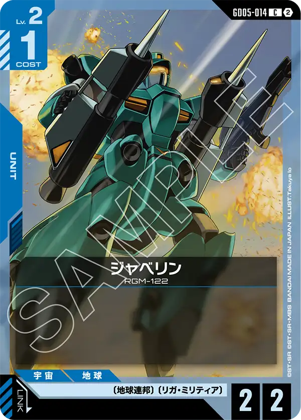
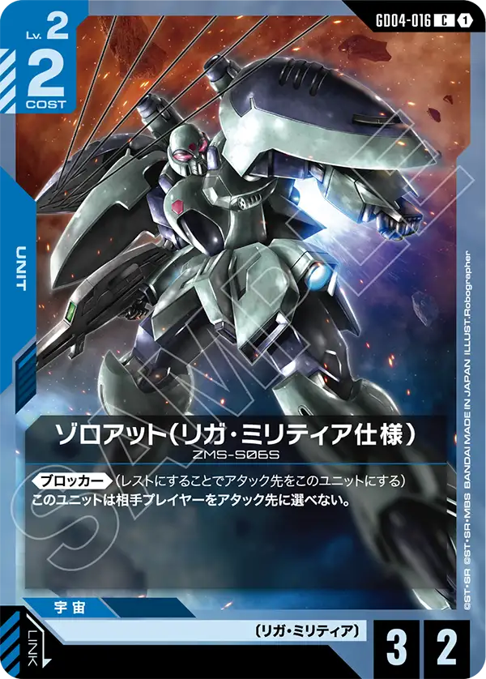
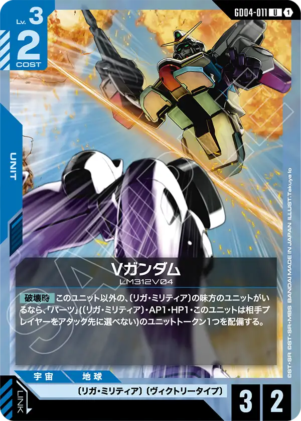
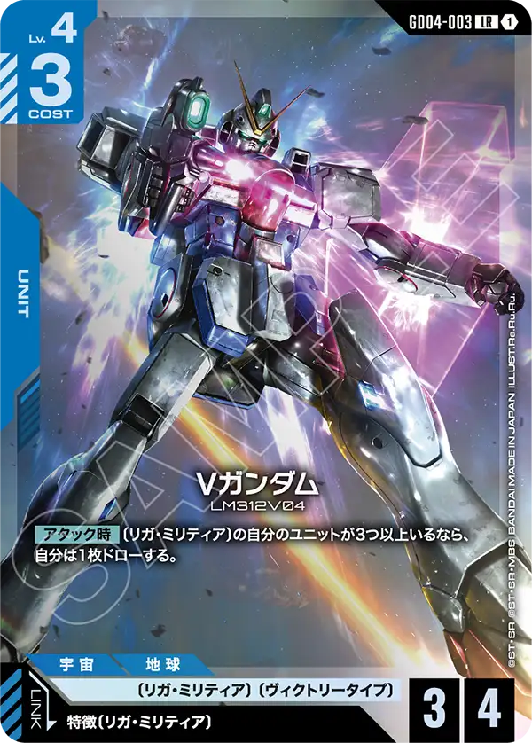

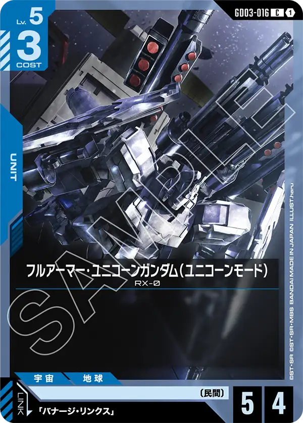
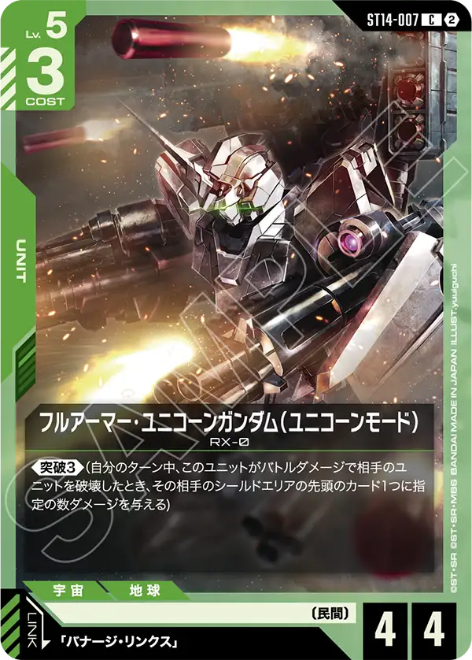
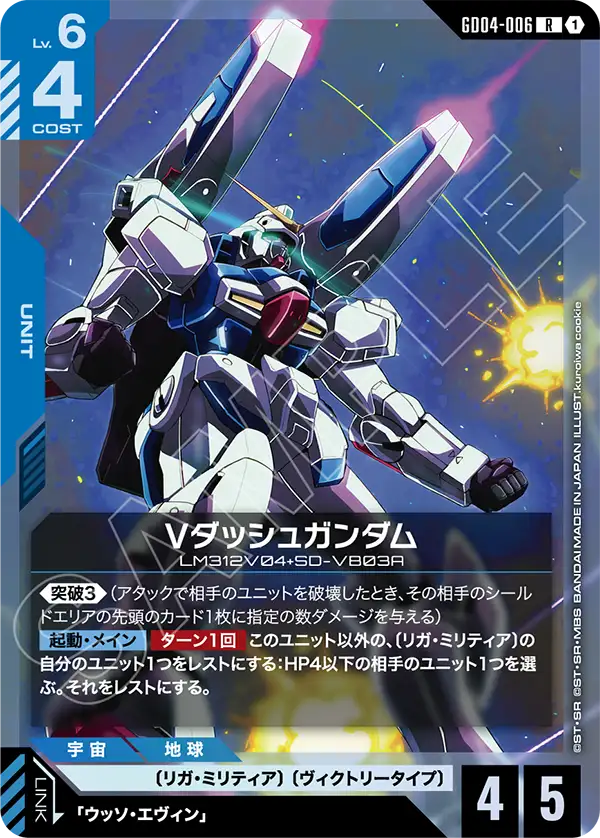
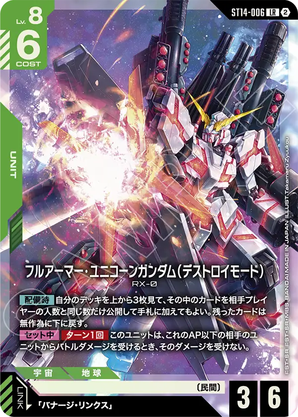
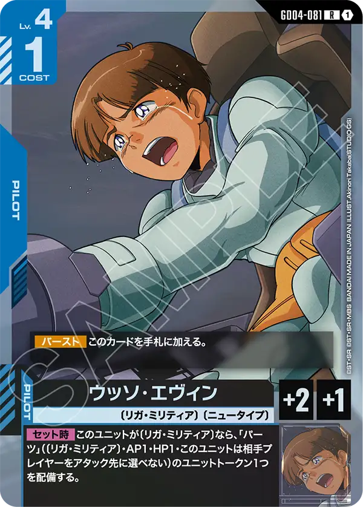

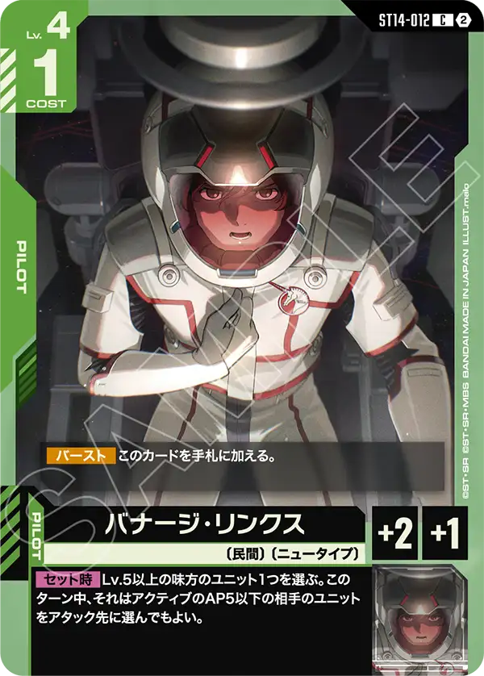
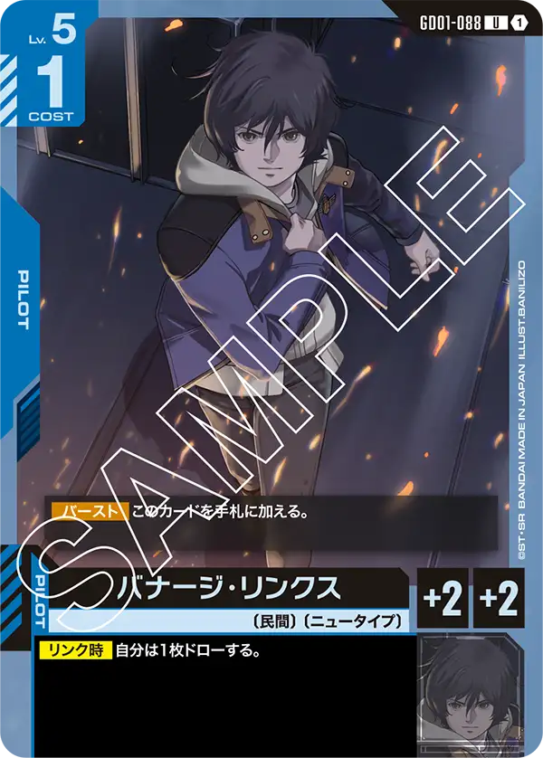

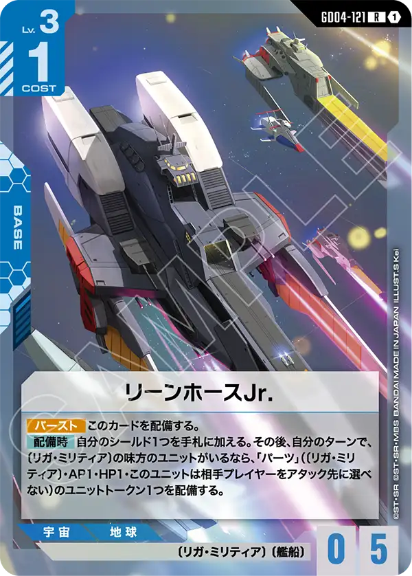
構成の見どころ
〔リガ・ミリティア〕7種27枚と「パーツ」
〔リガ・ミリティア〕のカードたちはVガンダム[GD04-011]やVダッシュガンダム[GD04-006]を活かして戦うカード群だが、効果を使うためにユニットの要求数がVガンダム[GD04-003]の場合は3体も要求してくるがそれを〔リガ・ミリティア〕の特徴である「パーツ」トークンパーツ[T-021]によって補う。
Vダッシュガンダム[GD04-006]のレストコストにも「パーツ」トークンが使え、コストが重いかわりに効果がコスト帯の中では強力なものが多いため、「パーツ」トークンパーツ[T-021]を効果コストに使うことを意識したい。
ただし、安易に「パーツ」トークンパーツ[T-021]をレストにしてしまうと、ガンダムマックスター[GD05-069]の的になってしまうのでそこは注意したい。

ストライクフリーダムガンダム[GD05-002]が入っているデッキ相手では「パーツ」トークンパーツ[T-021]を複数出しておけばアタック時効果を使わせなくできるので臨機応変に活かしていきたい

フルアーマー・ユニコーン3種9枚とバナージ2種5枚
序中盤はVガンダムを中心にしてリソース補給と盤面を整える役割を持ってもらい、後半の主力となるカードたちがこのカードたちになるだろう。
新弾で登場したフルアーマー・ユニコーンガンダム（デストロイモード）[ST14-006]が非常に面白く、自身のAP以下のユニットからバトルダメージを受けない効果を持っている。
一方的に相手ユニットと戦闘ができ、相手の低コストユニットとの相打ちも妨げる事ができるため出てくると非常に対応に困るカードになっている。
自ターン中にAPを上げてくれるガンダム[ST01-001]+アムロ・レイ[ST01-010]の組み合わせとも相性はよいといえるだろう。
その他にもステータスが優秀なフルアーマー・ユニコーンガンダム（ユニコーンモード）[GD03-016]や突破を持つフルアーマー・ユニコーンガンダム（ユニコーンモード）[ST14-007]も同じリンク対象カードとして採用でき、中盤以降の盤面をしっかりと支えてくれる。
リンク対象のバナージは2種バナージ・リンクス[ST14-012]、バナージ・リンクス[GD01-088]おり、青のバナージはAPとHPを+2しつつデッキから1枚ドローもできるためフルアーマー・ユニコーンガンダム（デストロイモード）[ST14-006]にリンクできると止まらない重戦車の完成といえるだろう。
バナージ・リンクス[ST14-012]の効果もレベル5以上を対象にする効果だが、リンク対象はすべてレベル5以上になるので、ロスは発生しないのは評価でき、突破を持つVダッシュガンダム[GD04-006]にも効果付与ができるのでそこは是非覚えておきたい。
同じ型の入賞
前日10/18のカードゲームショップ オレタン岡山本店で5位に入った青/緑も、Vガンダム2種・Vダッシュガンダム・ウッソ・エヴィン・リーンホースJr.・ジャベリンを同じ枚数で入れている。共通は15種のうち9種。違いは、向こうがV2ガンダム・ガンイージ・キュベレイ・ハマーン・カーン・ザクⅡを入れ、こちらがフルアーマー・ユニコーンとバナージ、ゾロアットを入れたこと。10/1〜10/25の青/緑378デッキでVガンダムを入れたのはこの2本だけで、同じ期間のVガンダムは青/赤（102デッキ中15本）と青/白（471デッキ中16本）のほうが多い。
運営のひとこと
フルアーマー・ユニコーンガンダム（デストロイモード）[ST14-006]を使ったデッキは案として様々なデッキが作られていたが、結果にはなかなか繋がらないデッキが多かったと思われる。
しかし、ようやく入賞する形が出来たのだと思うのだが、プレイ難易度は他のデッキと比べ非常に高いものであることはわかるだろう。
〔リガ・ミリティア〕のカードたちは個々の性能は良いものだが、「パーツ」トークンパーツ[T-021]を用意しないといけない難しさがあり、なかなか入賞までは遠かった印象がある。
その2つが合わさるこのデッキの難易度は想像を絶するものだと思われるが、優勝まであと一歩のところだったのは素晴らしいと言える。
フルアーマー・ユニコーンガンダム（デストロイモード）[ST14-006]を使って遊んで見た人ならわかると思うが、フルアーマー・ユニコーンガンダム（デストロイモード）[ST14-006]のカードパワーは素晴らしく、相手がどうやって対応するか悩んでいる顔を見るのはとても楽しい。
そこまでの導線をどうするのか考えている人は是非このデッキを使って遊んでみてほしい。
ユニコーンのシリーズはとても人気が高く、デッキの発売も控えているため今後も強化が期待できるため注目していきたい。
数え方
採用率は10/1〜10/25のシリアルカードチャレンジ 10月の入賞デッキのうち、デッキカラーが青/緑の378本を母数にした。「珍」は青/緑での採用率が10%未満のカード。64名規模の大会は公式順位どおり各順位2名で、このデッキは公式の6位を3位と数えた。デッキリストが公開されていない入賞デッキは数に入れていない。数字は公式の大会結果から自動で集めた集計で、誤りに気づいたらXアカウント（@gcg_stats）のDMで教えてほしい。